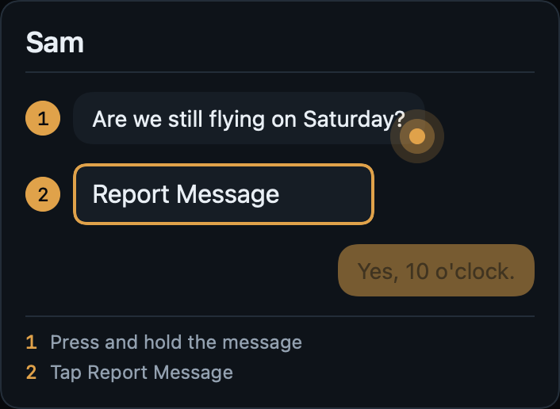
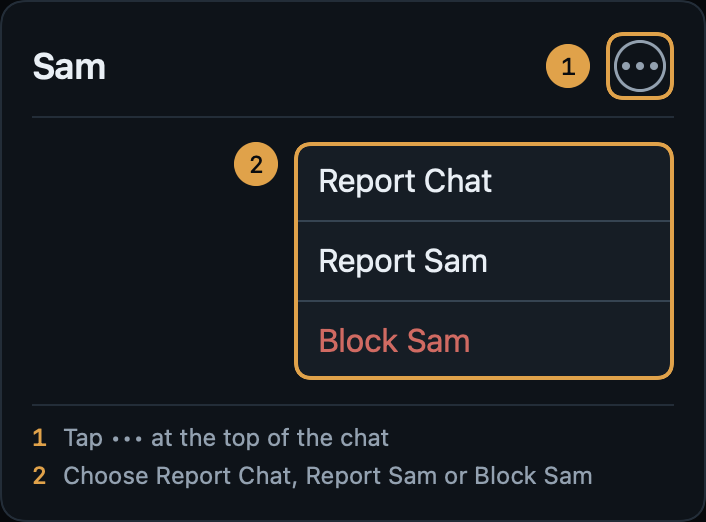
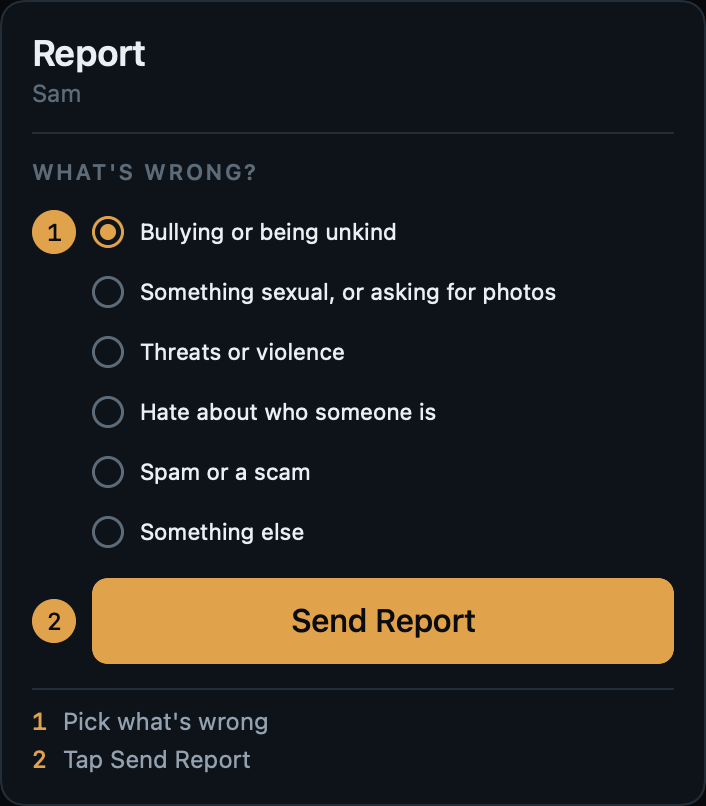
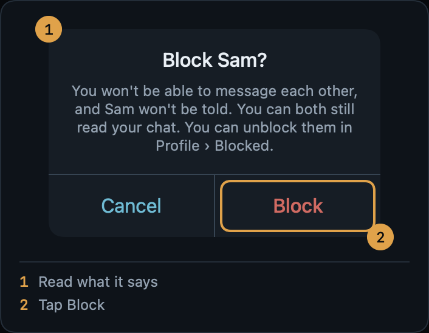

Staying Safe
This guide explains how to report something on TrueCourse, how to block someone, and how to complain. There is a part written for young people, and a part for parents and guardians. You don't need an account to read it.
For everyone
Report something in chat
You can report a message, a whole chat, or a person.
- To report a message, press and hold it, then tap Report Message.
- To report a chat or a person, tap ••• at the top of the chat, then Report Chat or Report Sam.
- In a group chat, to report one person, tap ••• at the top, then Group Info, then ••• beside their name.
Then choose what's wrong, add a note if you want to, and tap Send Report. Your report goes to TrueCourse. We keep a copy of what you're reporting, so it isn't lost if someone deletes it or their account. The person you report isn't told.
We'll look at it within 24 hours if someone under 18 may be involved, and within 72 hours otherwise. You can see how it's going in Profile › My Reports.
Report something outside chat, or without an account
If you see anything on TrueCourse that you think is illegal or could harm a young person, such as a club's name or website, or the reason given for a booking, email us at jamie.bentley@zerobatics.com. You can do this even if you don't have an account.
If someone is in danger right now, call 999.
Block someone
Tap ••• at the top of your chat with them, then Block Sam, then Block. In a group chat, tap ••• at the top, then Group Info, then ••• beside their name.
- Neither of you can send the other a message, at any club.
- In a group you're both in, you won't see each other's messages. Everyone else still sees both.
- They aren't told.
- You can both still read the chat you had.
- Only you can undo it, in Profile › Blocked.
Group chats
A club's owner or administrators can start a group chat for members whose age the club has confirmed as 18 or over. If you're under 18, or your club hasn't checked your age, you can't be in one.
- Nobody can put you in a group. You get an invitation at the top of the Chat tab, showing the group, the club, who invited you and who is in it.
- Tap Join or No Thanks. It's up to you. If you say no, nobody is told.
- You have 30 days to decide. After that the invitation goes away.
- To leave, tap ••• at the top of the group, then Group Info, then Leave Group. There's no announcement. To come back you'd need a new invitation.
Complaints and appeals
Email support@zerobatics.com to:
- appeal a decision we made, such as taking a message down or stopping an account from sending. Tell us which decision, and why you think it was wrong;
- complain that we aren't following our terms or the law.
In Chat, TrueCourse treats every account as under 18 until a club has checked its date of birth. If that's happened to you by mistake, ask your club to check your date of birth. Only a club that TrueCourse has verified can do this. You can see where it stands in Profile › Age Check.
We don't settle disagreements between members and clubs. Speak to your club about those. We act on anything illegal or that puts a young person at risk.
For young people
Who can message you
If you're under 18, only your own instructor can message you, and it's always just the two of you. Before that can happen:
- you and your instructor are linked at your club, and you turn messages on;
- your club checks your age;
- your club checks your parent or guardian's details.
You can turn messages off whenever you like, in Profile › Progress Sharing, and you don't have to say why. Nobody else can message you, and nobody can put you in a group.
Chat is text only. You can't send pictures, files or web addresses.
If something doesn't feel right
You don't have to reply. You can report it, block them, or both. It's a good idea to tell an adult you trust too, like a parent, a carer or a teacher.
How to report a message
Press and hold the message, then tap Report Message.

How to report a chat or a person
Tap ••• at the top of the chat. Then tap Report Chat to report the whole chat, or Report Sam to report the person.

Sending your report
Pick what's wrong. You can add a note, but you don't have to. Then tap Send Report.
The person you report isn't told. We'll look at it within 24 hours. The people who run your club can read our copy of what you reported too, unless they were in the chat.

How to block someone
Tap ••• at the top of the chat, then Block Sam. Check what it says, then tap Block.

Who can read your messages
- TrueCourse can read messages, but only to deal with a report or when the law says we must.
- People at your club can't read your chats. They can only see one if it's reported.
- Your parent or guardian can ask for your chat records, because you agreed to that on Age Check. Before we decide, we check who they are, whether a court has said anything about it, and what you think.
Notifications
If you turn notifications on, your lock screen only ever says "New message". It never shows who it's from or what it says. You can turn them off in Profile › Settings.
Help, right now
If someone is in danger right now, call 999.
Childline: call 0800 1111 for free, any time of day or night, or chat online at childline.org.uk.
Worried about online sexual abuse, or the way someone has been talking to you online? You can report it to CEOP, part of the police, at ceop.police.uk.
Worried about a child? The NSPCC Helpline is 0808 800 5000, 10am to 4pm, Monday to Friday.
For parents and guardians
What your child can do
TrueCourse is an app for learning to fly: lessons, bookings with a flying club, and chat.
If your child is under 18, they can chat only with their own instructor at their club, one to one, in text. They can't send pictures, files or web addresses, and they can't be in a group. TrueCourse treats every account as under 18 in Chat until a club has checked its date of birth, so these rules apply even if someone says they are older.
Notifications on your child's phone say only "New message". They never show who wrote or what they said.
Your details
Before your child can chat, they enter your name, how you're related to them, and one way to contact you. Then the people who run their club check your details, after checking your child's date of birth against an identity document in person. If your child changes your details, the club has to check them again.
Your details are deleted on your child's 18th birthday.
Asking for your child's messages
When your child entered your details, they agreed that you can ask for their chat records. To ask, email support@zerobatics.com.
The rights over this information belong to your child. So before we send anything, we check that you are the parent or guardian their club checked, whether a court has said anything about it, whether there has been any allegation of abuse against the person asking, and what your child thinks. We keep a record of every request. Messages are kept for 12 months from when they were sent.
What your child's club can see
The people who run a club that TrueCourse has verified can see the date of birth each member gave, and the parent or guardian details of members under 18. They can't read a chat they aren't in. If a chat is reported, they can read our copy of what was reported, unless they were in the chat themselves.
Reporting a concern
You don't need an account to tell us about something. Email jamie.bentley@zerobatics.com.
If someone is in danger right now, call 999.
Childline: call 0800 1111 for free, any time of day or night, or chat online at childline.org.uk.
Worried about online sexual abuse, or the way someone has been talking to you online? You can report it to CEOP, part of the police, at ceop.police.uk.
Worried about a child? The NSPCC Helpline is 0808 800 5000, 10am to 4pm, Monday to Friday.
Reading this together
The part of this guide for young people shows, with pictures, how to report and block in the app. You might find it useful to go through it with your child.